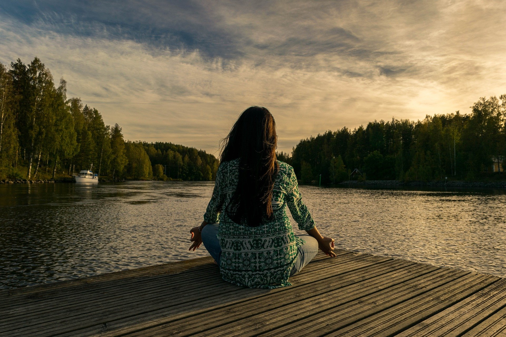
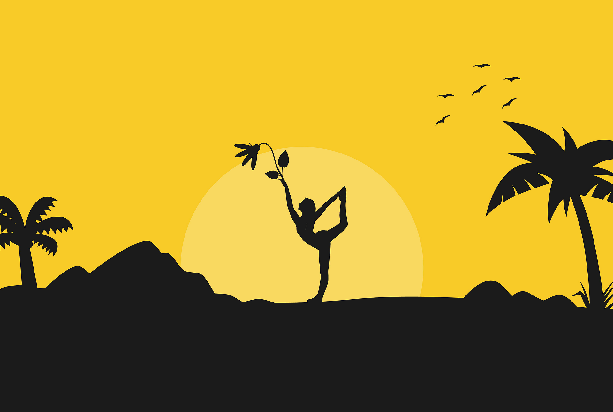
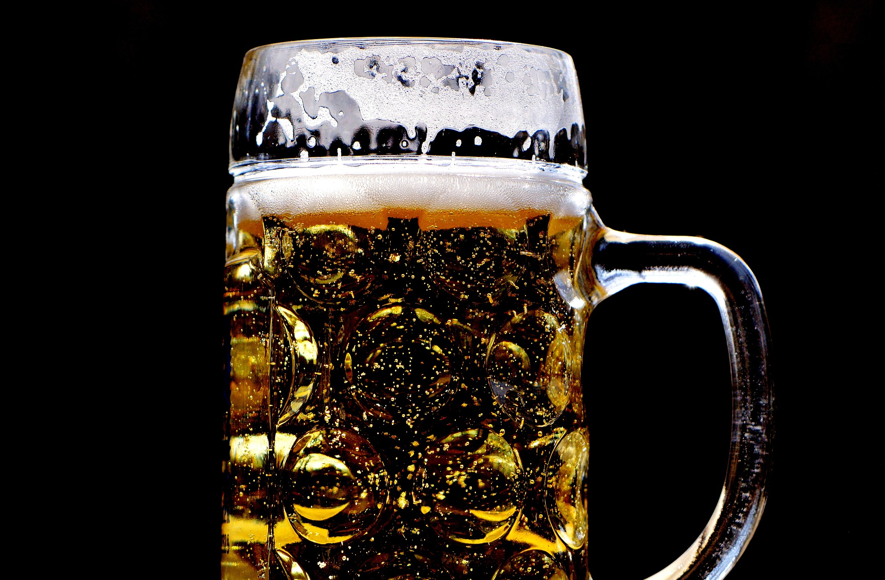
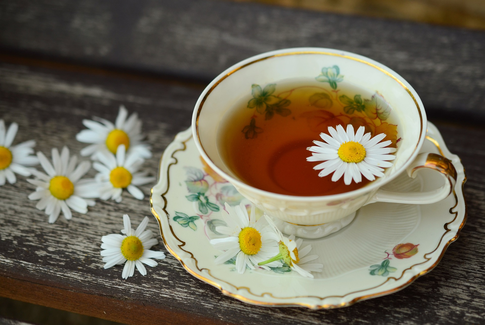
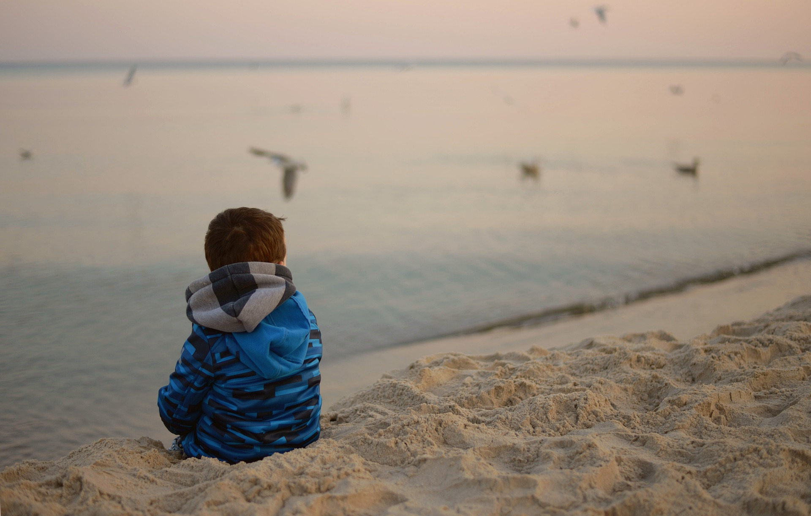
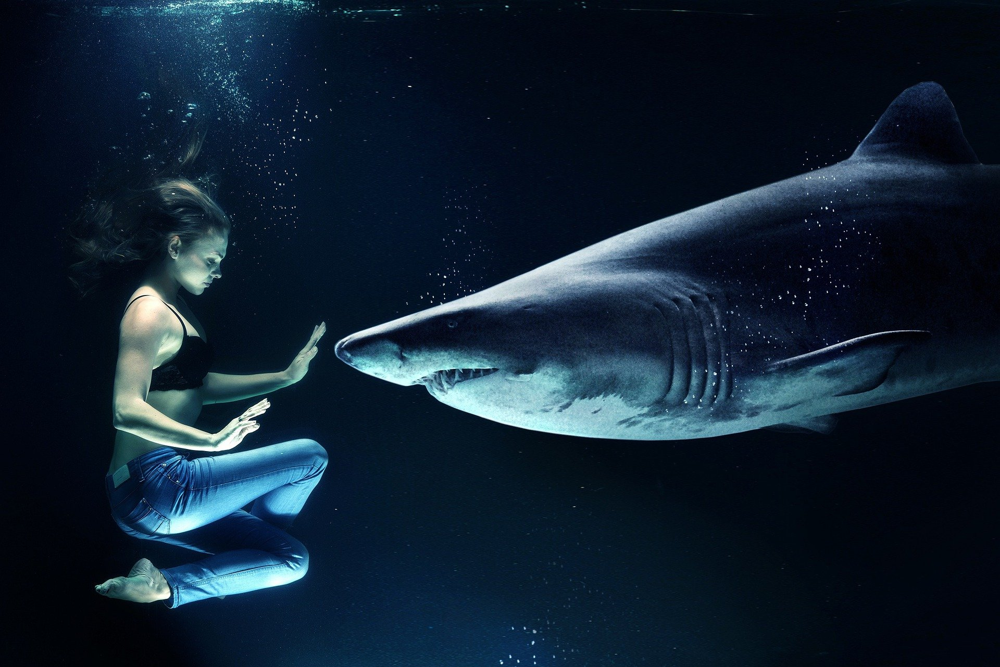

Meditacija
sve što trebate učiniti je slušati i uskladiti se s onim što se fizički događa od vrha glave do dna stopala.
- Pronađite mjesto za sjedenje u mirnom i tihom okruženju
- Postavite vremensko ograničenje
- Fokusirajte se na disanje
- Primijetite znatiželju svoga uma
- Prihvatite misli
Spavanje

Svatko bi trebao nastojati spavati dovoljno svake noći i poduzeti mjere za osiguranje optimalne kvalitete sna. Pojam higijena spavanja odnosi se na navike i ponašanja povezana s vašom rutinom spavanja. Pridržavanje smjernica zdrave higijene spavanja može vam pomoći osigurati odgovarajuću količinu kvalitetnog sna svake noći. Ove smjernice uključuju:
- Odlazak u krevet i buđenje u isto vrijeme svaki dan
- Izbjegavanje drijemanja nakon 15 sati
- Uključivanje u opuštajuće aktivnosti u večernjim satima
- Stvaranje mračnog, tihog okruženja spavaće sobe koje je pogodno za san
Joga
Prema Nacionalnom institutu za zdravlje, znanstveni dokazi pokazuju da joga pomaže u kontroli stresa, mentalnom zdravlju, svjesnosti, zdravoj prehrani, mršavljenju i kvalitetnom snu.
- Odredite fokus svoje prakse joge
- Budite svjesni da ne postoji nešto poput "dobre" ili "ispravne" joge
- Prikupite svu opremu s kojom želite vježbati
- Nosite prozračnu odjeću u kojoj se možete kretati
- Pronađite udobno mjesto za vježbanje
- Zagrijte se uz pozdrav suncu
- Usredotočite se na svoje disanje
- Naučite nekoliko joga asana
Pivo
Ima istine u ideji da alkohol može smanjiti stres. Alkohol je sedativ i depresor koji utječe na središnji živčani sustav. U početku, piće može smanjiti strahove i skrenuti vaš um sa svojih nevolja. Može vam pomoći da se osjećate manje sramežljivim, poboljšati vam raspoloženje i učiniti da se općenito osjećate opušteno. Nemojte pretjerivati!
Čaj
Kuhanje čaja kao metodički zadatak koji traje samo par minuta, ali je potreban vaš fokus; u pravilu ovaj zadatak vam omogućuj tih nekoliko minuta mentalne tišine što može isto odmoriti um.
Film
Kad ne znate što biste sa sobom, želite se odmoriti ili pak želite začiniti kućno druženje - gledanje filma uvijek je dobra opcija.
- Netflix
- Hulu
- Disney+
- Amazon Prime
- Scener
Misli
Zvuči intenzivno, ali ovo nije komplicirano. Holmes preporučuje da odložite svoj telefon i zatvorite zaslon prijenosnog računala na 10 minuta za neko potrebno "kontemplativno vrijeme da budete jedno sa svojim mislima", naglašavajući važnost dodirivanja baze sa samim sobom tijekom dana.
- Prepustite se savršenstvu. Umjesto da se nadate i borite za "praznu ploču" ili potpuno blaženstvo, prihvatite da će vaš um proizvoditi mnogo misli.
- Pozovite znatiželju
- Dišite
- Osjetite svoju okolinu
- Nemojte se uzrujavati zbog toga što ste uzrujani
- Potražite svoje središte
"Sretno mjesto"
Pronađite sunčano mjesto i razmislite o svom sretnom mjestu. Bilo da je to u vašem fantazijskom pansionu ili na plaži u Tajlandu, taj čin vizualizacije mjesta vedrine pomoći će vam da se osjećate smirenije.
- Započnite tako da odete na mjesto koje je tiho i gdje vas nitko neće ometati 15-ak minuta.
- Zauzmite udoban položaj
- Udahnite duboko, sporo
- Razmislite o nekom mjestu na kojem ste bili (ili zamišljali, ili vidjeli u filmu) koje je vrlo ugodno, mirno, umirujuće
Disanje
Vježbajte metodu disanja 4-7-8. Kako biste se stvarno usredotočili na svoje disanje, isprobajte metodu dubokog disanja 4-7-8. Zatvorite oči, udišite kroz nos četiri sekunde, zadržite sedam sekundi i izdišite kroz usta osam sekundi. Ponavljajte nekoliko minuta.